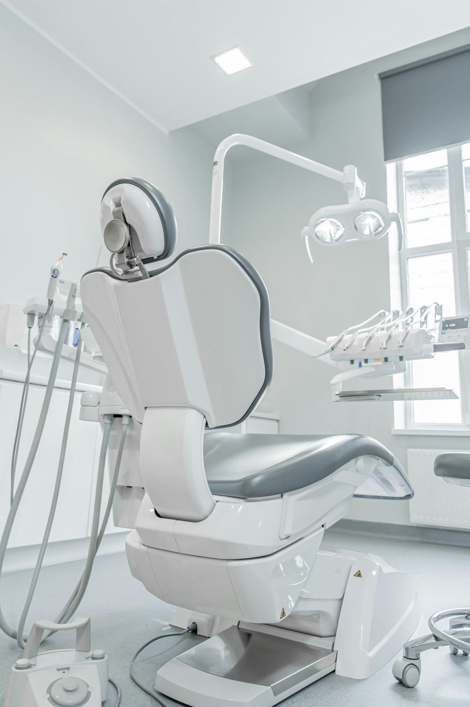
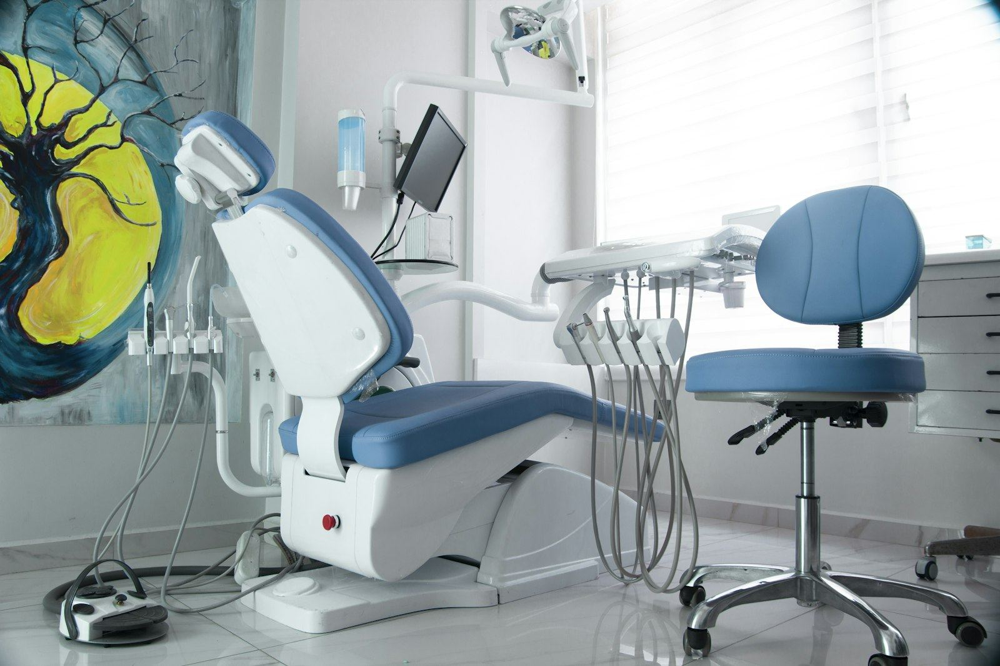
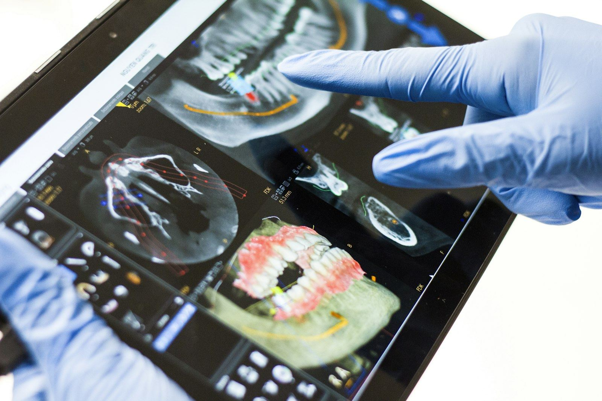

About Our Practice
Gentle hands, careful eyes. Family Dentistry in Pikesville and Eldersburg.
Our practice
About Rao Dental
Two neighborhood offices, one careful approach.
From a child's first checkup to crowns, Invisalign and Botox, we explain every step, work at your pace and see dental emergencies the same business day whenever possible.
Our offices in Pikesville and Eldersburg are warm, welcoming spaces with friendly teams who treat your time, and your nerves, with respect.
- 2014In practice since
- 2Maryland offices
- 5.0540 patient reviews

Friendly faces
Meet our team

Dr. Sumanya Venkat Rao
General Dentist · D.M.D., B.D.S.
Pikesville & Eldersburg
In practice since 2014 and experienced with children, adolescents, adults and patients with dental anxiety.
Dr. Robin J. Greenspan
D.D.S. · Georgetown University
Pikesville
More than 30 years practicing in the Baltimore area, treating patients like family with minimum discomfort.
Dr. Chaviva Golombeck
D.D.S. · University of Maryland
Pikesville
Certified in therapeutic and esthetic Botox and an Invisalign provider, focused on comfort and patient education.

Two locations
Our offices
Both offices are warm, welcoming spaces with friendly teams who treat your time, and your nerves, with respect. Pikesville Dental Associates is in Suite 510 on Old Court Road, and Today's Dental at Eldersburg is on Liberty Road.
Pikesville · Baltimore County
Pikesville Dental Associates
3635 Old Court Rd, Suite 510
Baltimore, MD 21208
Mon, Wed, Thu 8 am – 5 pm
Tue, Fri 9 am – 5 pm
Eldersburg · Carroll County
Today's Dental at Eldersburg
2030 Liberty Rd, Ste 1
Eldersburg, MD 21784
Mon, Wed, Thu 8 am – 5 pm
Tue, Fri 9 am – 5 pm
Modern care
Dental technology
Tools that make visits more comfortable, accurate and efficient.

Digital X-rays
Clear images with lower radiation than traditional film.
Intraoral cameras
See what we see, so every recommendation is easy to understand.
Modern equipment
Up-to-date equipment and techniques across general, restorative and cosmetic dentistry.
Comfort-first rooms
Calm, clean treatment rooms designed so you can relax.
What guides us
Our philosophy
“Quality dental care, delivered safely, comfortably and ethically, in an environment that is warm and welcoming.”
Listen first
Every plan starts with your goals and your concerns, in your words.
Plan carefully
Precise diagnosis and clear options, explained without jargon or pressure.
Go gently
You set the pace. We pause when you ask and we never rush.
Ready for a healthier smile?
New patients are always welcome at both offices.